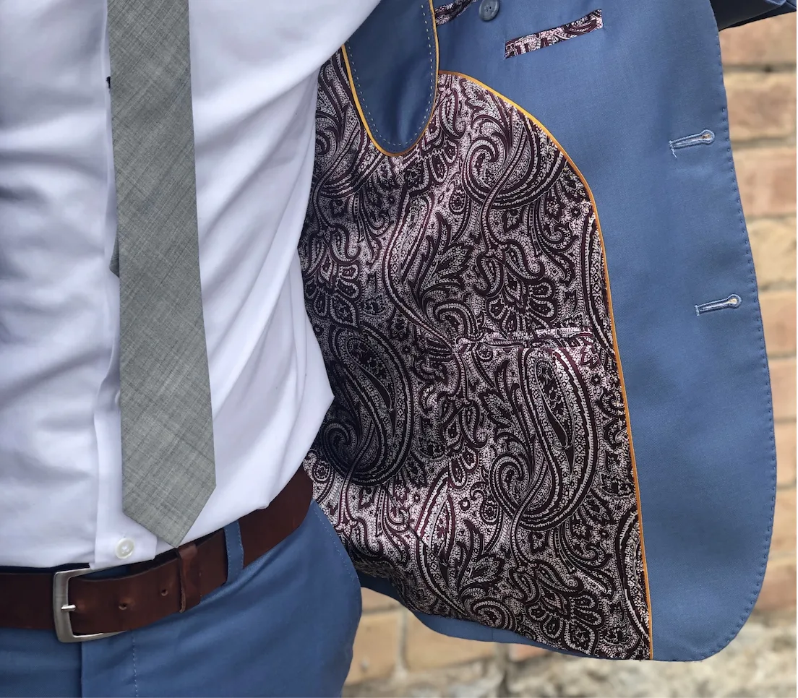
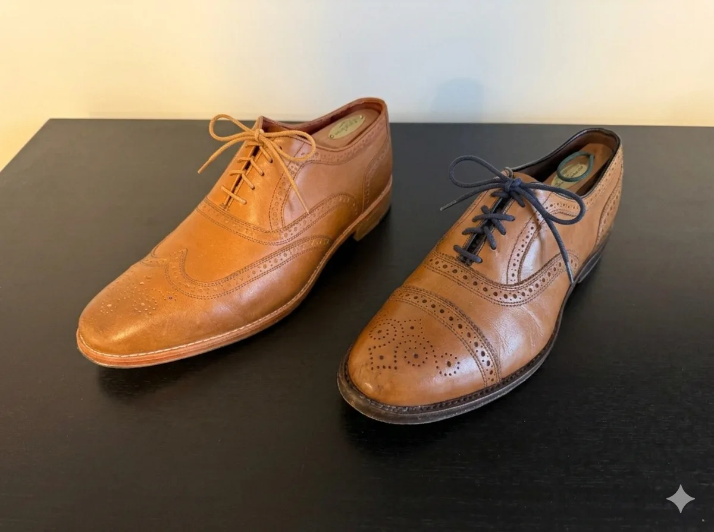
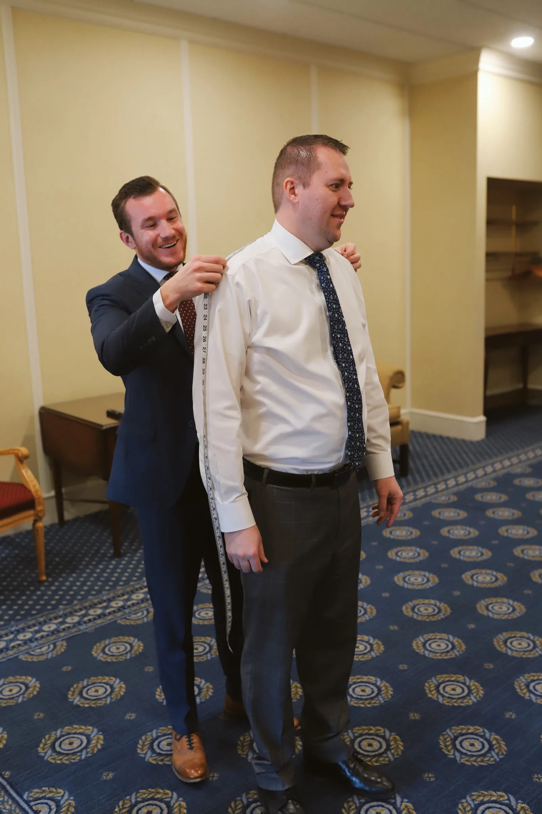
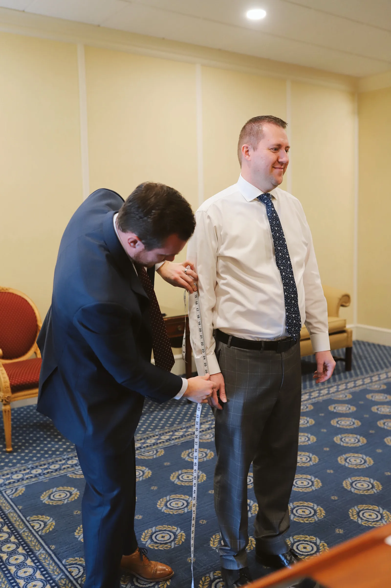

My Top 3 Suit Care Tips
Suit care comes down to simple habits: dry clean sparingly, skip the jacket in the car, and fix small issues early so your suit keeps its shape and longevity.
Read Article
Craftsmanship, style, and the art of dressing well
Suit care comes down to simple habits: dry clean sparingly, skip the jacket in the car, and fix small issues early so your suit keeps its shape and longevity.
Read Article
Your wedding photos will last for decades. Here's why it's worth thinking about whether a tuxedo, a classic suit, or something personal is the right choice for your big day.
Read ArticleWedding season is starting early this year! Here's when to start the process, the one reason you might wait, and why earlier is usually better.
Read Article
You don't need a bold pattern to make a suit stand out. Quality fabric, great fit, and thoughtful details can do the job—and do it better.
Read Article
What really matters in dress shoes? After years of wearing both stitched and welted shoes, here’s what I’ve learned about comfort, value, and why I’ve changed my mind.
Read Article
During just about every fitting, clients ask "How did you get into this?" Here's the full story—from tie boxes and getting fired two weeks before my wedding to finding a tailor in Bangkok.
Read ArticleThe story behind the name and what it means to create clothing that's exactly right. From whitelabel suits to finding precision in fit.
Read Article
What’s the key to a perfectly fitted suit? It might seem complicated, but it all comes down to the measurements the tailor uses to cut and sew.
Read Article